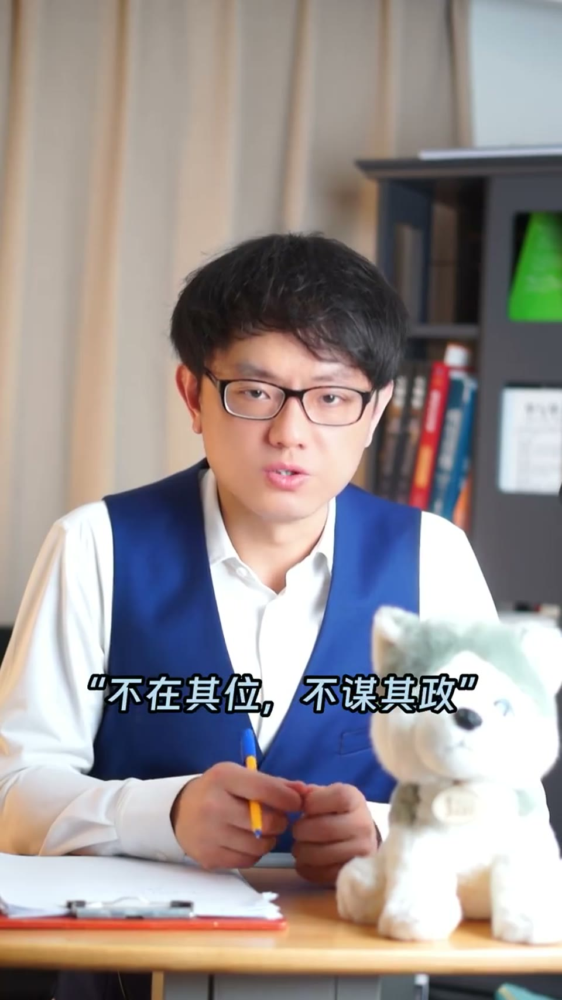
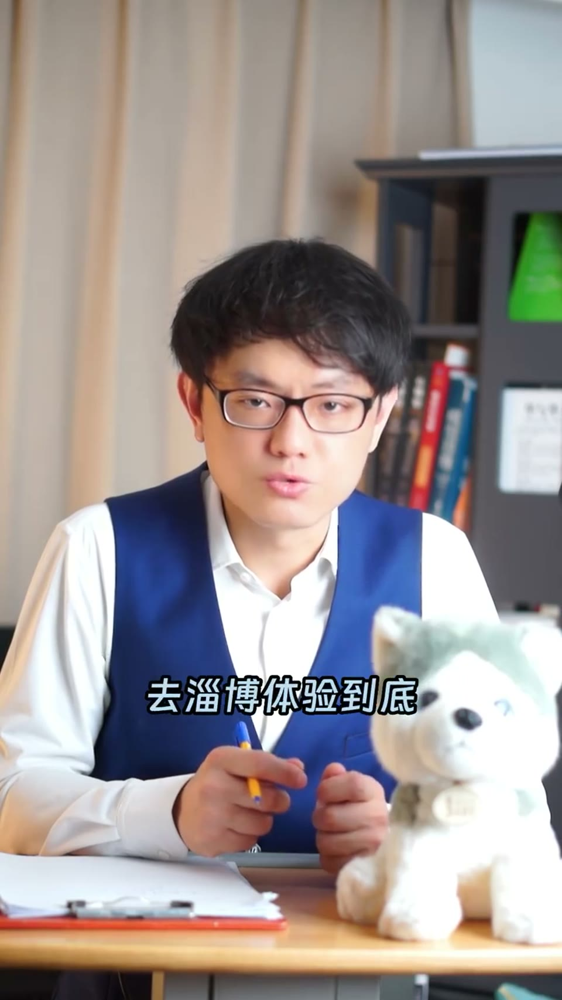
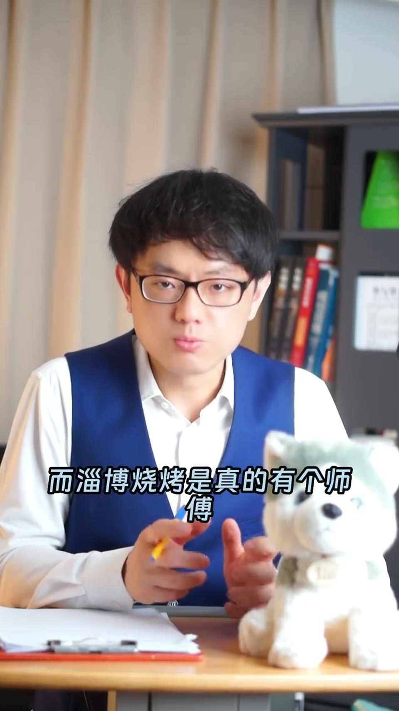
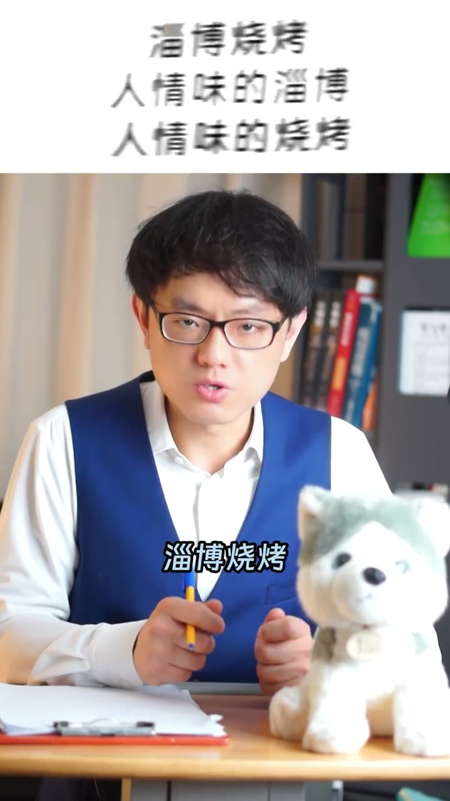

内容要点
一支 2 分钟的营销课：如果淄博烧烤没热度了、你是淄博市长怎么办？讲者用里斯/特劳特的定位理论为城市开方——定位要定在认知层面而非物理属性层面。淄博烧烤的「烧烤好吃」是物理属性，容易被复制；真正独特的认知资产是「人情味」。定位「人情味的淄博，人情味的烧烤」，还能衍生医疗、养老、美容等需要人情味的产业。
知识结构
淄博烧烤没热度了，如果你是市长怎么办？在公司里一直不在其位不谋其政，就只能是颗螺丝钉。
用里斯/特劳特定位理论为城市重新定位——定位定住了，流量随之而来。类比怕上火喝王老吉、爱干净住汉庭。
大V探店都指向一个极端：烧烤多好吃不予置评，但淄博市民和饭店老板是真热情。定位定在烧烤好吃很难成立。
物理属性易被复制，认知属性占据心智难被挤出。淄博烧烤有人情味：师傅烤成煤炭人摇扇子、送学子吃烧烤换来涌泉相报。定位「人情味的淄博，人情味的烧烤」。
定位 = 找竞品固有属性的对立面，定在认知层面而非物理属性。淄博的认知资产是「人情味」，定住后能衍生医疗、养老、美容等产业。
00:00-00:20如果你是淄博市长怎么办
开场设问：「淄博烧烤没热度了，如果你是淄博市长你怎么办？千万不要说不在其位不谋其政。如果你在公司里一直都是不在其位不谋其政，那就只能是一颗螺丝钉。」
讲者斗胆为淄博市长出方案：「用里斯/特劳特的定位理论，为淄博这座城市重新做定位。定位只要定住了，流量就会随之而来。」类比王老吉、汉庭：怕上火喝王老吉、爱干净住汉庭。


00:20-01:15烧烤好吃是物理属性，定不住
你说淄博烧烤应该怎么定位？是定位在烧烤好吃吗？短视频平台上多位大V探店达人体验淄博烧烤，所有的作品都指向一个极端：「要说烧烤有多好吃不予置评，但淄博市民跟饭店老板是真热情。」
「定位定在烧烤好吃很难成立。」定位住的东西一定是认知层面的东西，一定不能是物理属性的东西。理由是物理属性的东西很容易被复制——大众消费品用到的原材料和生产技术，又不是空间站光刻机的技术，你没有办法锁住不让竞争对手用；而认知属性一旦占据消费者的心智，就很难再被挤出来。烧烤的口味是物理属性的东西，很容易被复制。
01:15-01:50定在人情味：淄博真正的认知资产
那淄博烧烤有什么要素，是竞争对手没有的或比较差的，同时又是认知层面的东西呢？把淄博烧烤拆成「淄博」和「烧烤」分别看。
先说烧烤：现在饭店里吃的菜都是中央厨房、机器人加预制菜加调料包做出来的；而淄博烧烤是真的有个师傅把自己烧成煤炭人，为你尽心尽力摇扇子，把一盘盘烤肉面饼端到你面前，烤完之后再跟你一起喝个小酒、聊聊天——这里面是什么？人情味。
再说淄博：当时淄博市政府发自内心的关心学子，送学子回学校前请他们吃烧烤，后来学子们涌泉相报。这里面是什么？也是人情味。
「如果让我来定位——淄博烧烤，人情味的淄博，人情味的烧烤。然后把这句广告贴在首都机场、虹桥机场、浦东机场、深圳机场的所有高架道路广告牌上。」定位就是要找竞品固有属性的对立面。竞争对手不会因为淄博烧烤火了，就把他的中央厨房全撤了去搞一堆人来做。定位就是要从大众脑袋里找出他们已经有的内容，将它凸显出来，而不是发明一个新东西。有人情味的淄博，是所有人脑袋里都有的内容，我的职责是让它凸显出来。
关键定位应该定在人情味，而不是定在烧烤。如果人情味这个定位给定住了，淄博将来可以发展所有特别需要人情味的产业——医疗、养老、美容等等。


完整转录（81段）
以下文本由 Whisper medium 模型自动转录，可能存在少量识别误差，已尽可能修正。
资博烧烤没热度了
如果你是资博市长你怎么办
千万不要说不在其位不谋其政
如果你在公司里一直都是不在其位不谋其政
那就只能是一颗螺丝钉
现在请允许我斗胆为资博市长出方案
我的方案是用李斯特拉特的定位理论
为资博这座城市重新做定位
定位只要定住了流量就会随之而来
类似于帕上果和王老吉
百世年轻一代的选择
爱干净祝汉庭等等等等
你说资博烧烤应该怎么定位呢
是定位在烧烤好吃吗
我在短视频平台刷到过好几位大V探店达人
去资博体验到底那里的烧烤有多好吃
所有的作品都指向一个极端
要说烧烤有多好吃不予置评
但资博市民跟饭店老板是真热情
定位定在烧烤好吃很难成立
定位定住的东西一定是认知层面的东西
一定不能是物理属性的东西
理由是物理属性的东西很容易被复制
大众消费品用到的原材料和生产技术
又不是空间站光刻机的技术
你没有办法锁住不让竞争对手用
而认知属性一旦占据消费者的心智
就很难再被挤出来
烧烤的口味是物理属性的东西
很容易被复制
那请问资博烧烤有什么要素
是竞争对手没有的或者比较差的
同时又是认知层面的东西呢
我们把资博烧烤分为资博和烧烤分别看
先说烧烤
现在的问题是你到了饭店里吃的菜
其实都不是人做出来的
是中央厨房机器人加玉子菜加调料包做出来的
而资博烧烤是真的有个师傅把自己烧成个煤炭人
为你尽心尽力摇扇子
把一盘盘烤肉面饼断到你面前
烤完之后再跟你一起喝个小酒
辣辣家常
这里面是什么
人情味
再说资博
当时资博市政府肯定是没有想到
他们发自内心的关心学子
送学子回学校前请他们吃烧烤
会有后来大疆绝地般的涌泉相报
这里面是什么
也是人情味
如果让我来定位
资博烧烤
人情味的资博
人情味的烧烤
然后把这句广告贴在首都机场
红轿机场
浦东机场
深圳机场的所有高加道路广告牌上
定位就是要找竞品固有属性的对立面
竞争对手不会因为资博烧烤火了
就把他的中央厨房全撤了
去搞一堆人来做
定位就是要从大众脑袋里面找出他们已经有的内容
将它凸显出来
而不是在大众脑袋里面发明一个新东西
有人情味的资博
这是所有人脑袋里都有的内容
我的职责是让它凸显出来
关键定位应该定在人情味
而不是定在烧烤
如果人情味这个定位给定住了
资博是将来可以发展所有特别需要人情味的产业
医疗
养老
美容等等
资博烧烤
人情味的资博
人情味的烧烤
你觉得呢